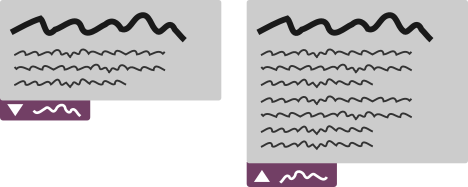

Fiche 8 : Respecter la distinction fond et forme
Introduction - Cas utilisateurs
Pour créer un site web, on utilise principalement deux langages : HTML et CSS. HTML permet de créer un balisage sémantique de votre contenu, c'est le « fond ». CSS permet de réaliser des mises en forme (couleurs, positionnements, etc.), c'est la « forme ». Les deux ont des objectifs différents et ne doivent jamais jouer un rôle différent. Simplement : la mise en forme ne doit jamais apporter du sens au contenu et le contenu ne doit pas être pourvu d'éléments de mises en forme. Votre site doit être compréhensible sans la mise en forme.
Les utilisateurs aveugles qui naviguent avec un lecteur d'écran n'ont pas accès à la mise en forme. Donc si vous implémentez une image avec du contenu en propriété de fond (background-image), ce contenu est totalement inexistant pour ces utilisateurs.
Certains utilisateurs ayant des problèmes de vues divers (vision des couleurs, taille des caractères, police particulière) vont charger une feuille de style utilisateur ou utiliser des fonctionnalités dédiées pour adapter la présentation de votre site à leur propre besoin de mise en forme. Si vous aviez défini des éléments qui apportent de l'information (comme des images de fond, des contenus générés en CSS), ces éléments vont disparaître et ces utilisateurs n'y auront pas accès.
Utiliser les balises HTML pour leur sens propre
Vous ne devez pas utiliser les balises à des fins de présentation. En effet, l'utilisation de balises HTML pour une finalité différente de celle prévue dans les spécifications (au regard du type de document déclaré) est interdite.
Par exemple :
- utilisation des balises
<hx> à seule fin de créer un effet typographique ;
- utilisation de la balise
<blockquote> à seule fin de mettre un paragraphe en retrait (puisque cette balise possède nativement un style qui créée une indentation).
Important : l'utilisation d'éléments <div> ou <span> pour créer des paragraphes est considérée comme non conforme. Vous devez toujours utiliser l'élément <p> lorsque vous rédigez ou insérez un paragraphe.
Mise en forme exclusive via CSS
Toutes vos mises en forme doivent être réalisées uniquement en CSS. CSS met à disposition 3 moyens pour réaliser les mises en forme :
- la liaison de la page HTML avec une feuille de style externe
<link rel="stylesheet" href="#" media="screen"> ;
- la balise
<style></style> dans le <head> de la page ;
- l'attribut
style sur des éléments HTML.
Il est interdit de trouver dans vos pages des éléments et attributs de mise en forme. En effet, les feuilles de style peuvent être surchargées par une feuille de style utilisateurs, mais il est beaucoup plus compliqué et quelquefois impossible de surcharger les mises en forme générées via des éléments ou attributs.
Tous les attributs de mise en forme sont interdits (align, alink, background, basefont, bgcolor, border, color, link, text, vlink,…).
width et height sont autorisés uniquement sur les éléments <img>, <svg>, <object>, <embed> et <canvas>.
Les éléments <basefont>, <blink>, <center>, <font>, <marquee>, <s>, <strike>, <tt> et <u> sont interdits.
Contenu visible sans CSS
Images de fond
Les images de fond (insérées par la propriété CSS background ou background-image) ne doivent jamais être porteuses d'information.
Lorsque vous en êtes à l'étape de conception de vos gabarits, face à la maquette graphique, prenez soin de distinguer les éléments qui seront des images, et dans ces images, de distinguer celles qui sont porteuses d'information et celles qui sont purement décoratives.
Lorsque les images sont purement décoratives (couleur de fond, illustration décorative), vos choix d'intégration sont libres, à condition de respecter les règles d'accessibilité :
- Les images de décoration sont implémentées en propriétés de fond CSS, il n'y a a priori aucun problème d'accessibilité.
- Les images de décoration seront implémentées en image HTML
<img> par exemple, veillez donc à définir une alternative vide <img alt="">.
Les images porteuses d'information sont très souvent des images contenant du texte en image. Dans ces cas, il ne faut pas en faire des images de fond, mais les implémenter en image HTML en veillant à définir une alternative pertinente.
Nous renvoyons à la fiche sur les images pour les différents types d'implémentation d'images, notamment au travers des balises <svg>, <object>, <embed> et <canvas>.
Lorsqu'aucune autre solution n'est possible, il est toléré de transmettre l'information véhiculée par l'image de fond via un texte masqué de manière accessible (en positionnement par exemple). Néanmoins, cette solution peut poser d'autres problèmes lorsque sont utilisés des dispositifs spécifiques, comme certains modes de contrastes élevés.
Contenu généré en CSS content
La propriété CSS content permet d'injecter du contenu dans le HTML. Pour autant, même si ce contenu est visible avec les CSS activés, il ne l'est plus lorsque les CSS sont désactivées. Ainsi, vous ne devez donc jamais utiliser content pour insérer du contenu texte.
content et les pseudos-sélecteurs :after et :before sont très souvent utilisés pour l'insertion d'icônes grâce à des polices d'icônes. Si les icônes sont purement décoratives, alors il n'y a pas de problème d'accessibilité. Par contre, s'il s'agit d'icônes porteuses d’information, alors vous devez veiller à ce qu'un moyen alternatif permette de récupérer cette information.
L'exemple emblématique (mais pas unique) de cette pratique est la création de liens ou de boutons avec des icônes. L'implémentation est très souvent lacunaire puisque ces liens et boutons sont au final des éléments vides.
Dans ces cas, un utilisateur aveugle qui n'a pas accès à la mise en forme ne sait pas à quoi sert le lien ou le bouton.
<a href="#"><span class="fa fa-home"></span></a>
<button><span class="fa fa-cog"></span></button>
.fa-home:before {
content: "\f015";
}
.fa-cog:before {
content: "\f013";
}
Vous avez des contraintes graphiques et vous ne pouvez mettre un texte visible à la place de ces icônes. Une solution acceptable est de fournir un texte positionné hors écran. De plus, ces icônes ne sont pas forcément compréhensibles par tout le monde, il est donc généralement préférable (mais non obligatoire) d'ajouter un attribut title qui reprend ce texte positionné hors écran, pour que tous les utilisateurs aient la même information.
<a href="#" title="Accueil">
<span class="fa fa-home"></span>
<span class="sr">Accueil</span>
</a>
<button title="Paramètres">
<span class="fa fa-cog"></span>
<span class="sr">Paramètres</span>
</button>
.sr{
position:absolute;
top:-10000px;
}
Important : la présence seule d'un title sur un lien n'en fait pas un lien conforme. Un lien doit toujours avoir un intitulé texte entre les balises <a> et </a>
D'autres solutions sont à votre disposition :
- utiliser des images HTML
<img> avec une alternative alt renseignée ;
- utiliser des images
<svg> avec un élément <desc> renseigné.
Couleur de fond pour les textes
Pour chaque couleur de police de texte (propriété CSS color) déclarée dans vos styles, cette police doit avoir une couleur de fond déclarée (propriété CSS background-color), au moins héritée d'un parent. Littéralement, il suffit d'avoir une couleur de fond sur l'élément <body> (parent de n'importe quel enfant du document). Pour aider l'utilisateur, il est préférable de prendre ce critère de manière plus stricte. Le cas le plus courant est de trouver une couleur de fond d'élément simulée par une image de fond. Lorsque les images sont désactivées (cas d'utilisateurs présentant des troubles de l'attention, par exemple), cette couleur n'est plus disponible et le texte n'est plus lisible.
Contenu compréhensible sans CSS
C'est souvent à cause de contraintes de mise en forme que la structure HTML est altérée au détriment de la compréhension.
Par exemple, votre maquette propose une mise en forme des actualités avec une image-lien et les thèmes de l'actualité sur la gauche et sur la droite, le titre et le chapeau de l'actualité.
Votre première réaction est de placer dans le code source : d'abord l'image, puis les mots clés, puis le titre et enfin le chapeau.
<div class="left">
<a href="#"><img src="..." alt="lien" /></a>
<ul>
<li>thème 1</li>
<li>thème 2</li>
</ul>
</div>
<div class="right">
<h2>Titre de l'actualité</h2>
<p>Chapeau de l'actualité</p>
</div>
Pourtant le titre est également le titre du lien et des thèmes. Un ordre cohérent voudrait que le titre précède tous les éléments auxquels il se rapporte dans le code source. Libre à vous de réaliser ensuite les mises en forme que vous souhaitez.
De plus, si plusieurs actualités se succèdent, comment un utilisateur, notamment aveugle qui navigue au lecteur d'écran, va-t-il être en mesure de comprendre quel titre se rapporte à quel lien et à quels thèmes ? Si l'utilisateur suit un ordre logique linéaire de consultation, sa compréhension sera fausse parce que la succession des éléments dans le code source ne reflète pas le sens, compréhensible uniquement par la mise en forme.
La construction correcte dans ce cas est donc :
<div class="right">
<h2>Titre de l'actualité</h2>
<p>Chapeau de l'actualité</p>
</div>
<div class="left">
<a href="#"><img src="..." alt="lien" /></a>
<ul>
<li>thème 1</li>
<li>thème 2</li>
</ul>
</div>
Il faut toujours garder à l'esprit que la mise en forme (la maquette du site) ne doit pas être fondée sur des choix de structure qui répondent uniquement à des demandes de mises en forme. Lorsque vous modifiez ou choisissez une certaine implémentation des éléments HTML, et un certain ordre de succession des éléments, posez-vous toujours la question de savoir si dans cet ordre, sans la mise en forme, il est possible de comprendre les informations sans équivoque.
Textes cachés correctement positionnés
Lorsqu'un élément est rendu visible sur action de l'utilisateur, le composant qui a permis de rendre visible l'élément caché doit être situé avant dans le code source. La raison simple est qu'un utilisateur aveugle qui parcourt la page de manière linéaire n'aura pas conscience de l'apparition du texte caché, si le composant est situé après.

Dans cet exemple, un bouton permet d'étendre la zone de contenu pour afficher une partie de contenus qui était cachée. Lorsque l'on active le bouton, le focus reste dessus. Une fois que le contenu est apparu, le focus est toujours sur ce bouton. L'utilisateur aveugle va alors parcourir le contenu suivant en pensant accéder au contenu qu'il a afficher avec le bouton, ce qui n'est pas le cas dans cet exemple.
Une exception à cette règle : lorque le texte caché appartient à un composant ARIA, l'ordre dans lequel il doit être implémenté, par rapport à l'évènement déclencheur, est imposé par le motif de conception ARIA utilisé.